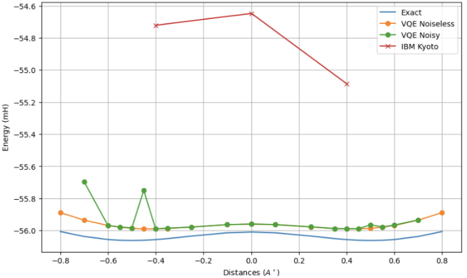
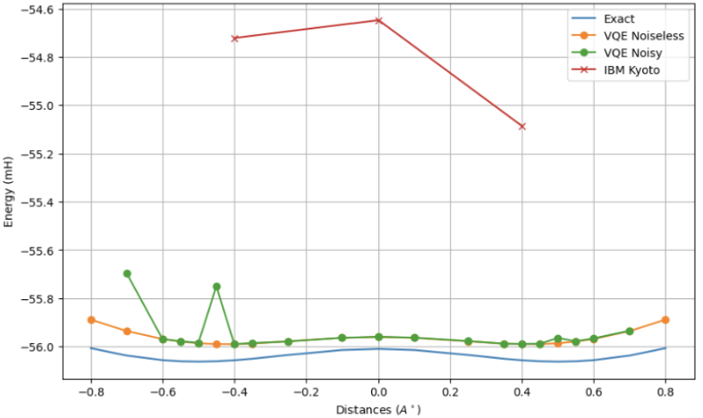

Research and Projects
Research
Quantum Optics Group
Harvey Mudd College, Spring 2024 – Present, Collaboration: Professor Theresa Lynn (PI), Paco Navarro (HMC '25), Stuart Kerr (HMC '26)The Harvey Mudd Quantum Optics group studies entanglement witnesses and their applications towards detecting entanglement. Click Read More for more info and a link to our Summer 2024 Research Poster!

Quantum Materials and Nanodevice Laboratory
San Francisco State University, Summer 2023The Quantum Materials and Nanodevice Laboratory focuses on the properties of two-dimensional materials and their applications towards nanodevices. Click Read More for more info about my work with the group and some cool plots!

Quantum Materials and Nanodevice Laboratory, San Francisco State University
Two-dimensional and zero-dimensional materials are undoubtedly useful for applications in efficient solar cells and biomedical devices. The Quantum Materials and Nanodevice Laboratory investigates the properties of materials as thick as one or two atoms, including graphene, MoS2, MoSe2, WS2, and WSe2.
During Summer 2023, I worked to replicate a sensitivity to substrate preparation seen in monolayer (1 atom thick) MoS2 samples seen in previous literature. To do so I exfoliated samples using the scotch tape method, found monolayers using a microscope, determined their Raman peaks using a Raman spectrometer, and analyzed and curve fit data using Python. The process of creating an ultra-smooth gold substrate surface, onto which we placed MoS2 samples, was notable due to it affecting the Raman peaks of the samples: Raman spectrums for glove box-prepared samples showed unique features such as a 'baby bump' on the E peak and splitting of the A mode, absent in ambient-prepared samples. These differences provide insights into environmental effects on monolayer properties, relevant for device fabrication. We believe these differences to stem from oxygen bonding with the gold substrate when prepared in ambient conditions. See the figures below for differences in Raman peaks and example samples.


Projects
A Physical and Chemical Simulation for Estimating Long-Term Stair Wear (COMAP MCM 2025)
Jan 24-27, 2025, Collaboration: Edward Donson, Charlie SchofieldFor the 2025 COMAP Mathematical Contest in Modeling (MCM), we developed a way for archeologists to determine various characteristics of historical stairs. This model utilized a 2D Generalized Maxwell Model for divot generation from repeated human steps, and a Gaussian Mixture Model to estimate chemical precipitation from erosion. Click Read More to see our paper and some pretty flow charts!

Modeling Bio-Materials to Second Order
In order to better understand the cultural significance of manmade landmarks it is useful to
study their surrounding features. In particular, the wear and estimated age of staircases can
provide useful information for an archaeologist studying a landmark, including landmark usage,
travel patterns around the landmark, and even features such as the flow of visitors in and out of the
landmark. To properly model staircase wear, traffic, and age, we employed a Generalized Maxwell
Model to simulate human-step traffic up and down a staircase, and a set of Linear Polynomials
in a chemical erosion model to determine yearly erosion of specific sedimentary and metamorphic
rocks that make up a majority of historic staircases.
Our Generalized Maxwell Model takes a random force generated from a dataset of footstep
samples and applies the force to a 2D set of lattice points which are vertically connected by a
series of springs and dampers. The movement of these lattice points is then simulated over a second
to produce a physically accurate response to the compression a stone stair would experience upon
being stepped on. This model of a single step is then propagated over hours, days, and years to
model the cumulative wear on a stair caused by human steps over time. The human step force is
able to be applied on different sections of a stair and with various forces to simulate and match
on-site measurements of the stair by an archaeologist.
Our Linear Polynomials take inputs of stone type, sedimentary or metamorphic. Other
parameters are generated using Gaussian Mixture Modeling by taking existing precipitation
and atmospheric data from a similar region and approximating the amount of yearly precipitation
and concentration of pollutants. This combination of probabilistic and staircase-specific parameters
predicts the rate of erosion of a stone staircase as a result of acidic rain and reaction of chemicals
in the stone with chemicals from the rain or atmosphere.


Modeling Bio-Materials to Second Order
Fall 2024, Collaboration: Charlie SchofieldWe modeled polymeric materials using a non-linear correction term to Hooke's Law, simulating a biological system; see the figure at right. We evaluated the associated non-analytically solvable equations of motion while varying spring constants, masses, and initial conditions. Click Read More for more detail, interesting plots, and a link to our write up.
Modeling Bio-Materials to Second Order
Polymeric materials are biological materials in which repeated microscopic units lead to interesting macroscopic properties. These materials often have different moderate and high strain limits than those expected for linear Hooke's Law systems, meaning a non-linear relationship between the spring's restorative force to its displacement, characterized by different regimes dependent on the tension applied. In the moderate displacement regime, a material yields and is easier to stretch than low displacement, and in the large displacement regime the limiting factor becomes how much individual monomers can stretch. For my classmate Charlie Schofield's and my Theoretical Mechanics course computational project, we modeled these two regimes using a non-linear correction term to Hooke's Law.
We used Python and Mathematica to solve the non-analytically solvable equations of motion for this system, creating position vs. time, velocity vs. position, and Poincare maps (also known as surfaces of section) to view dynamic behavior. To find equations of motion, we solved the Lagrangian and Euler-Lagrange equations by hand then used the solve_ivp function from SciPy to solve the differential equations. Plotting used Matplotlib, and all code is contained in a commented Jupyter notebook! See below for some sample plots and read the write up for more information.


Demonstrating Ammonia SDMP via Variational Quantum Eigensolvers
Spring 2024Variational quantum eigensolvers are a class of quantum algorithms (i.e. for a quantum computer) used for quantum chemistry and optimization problems. Using Qiskit and the IBM Cloud Platform I solved for the ground state energy of NH3 and H2 (see umbrella inversion at right) on simulated and real quantum computers. Click Read More for cool figures and a link to the Github with all code, figures, and a write up.

Demonstration Ammonia SDMP via Variational Quantum Eigensolvers
The nitrogen atom in ammonia (NH3) is able to tunnel through the plane formed by the three hydrogen atoms, a phenomenon known as umbrella inversion. This quantum mechanical effect is a classic example of tunneling, where the nitrogen atom moves between two equivalent configurations. We expect the corresponding plot of energy versus nitrogen position from the planar hydrogens to have a symmetric dual minima potential (SDMP). Using variational quantum eigensolvers (VQEs), we can simulate this process and calculate the ground state energy of the molecule at various distances. VQEs are powerful quantum algorithms that map a problem's Hamiltonian to a variational quantum circuit, calculate the energy, and iteratively optimize the circuit parameters to find the minimum energy configuration.
I confirmed this prediction using Qiskit VQE algorithms and the IBM Cloud Platform for access to simulated noiseless and noisy quantum computers, as well as IBM's quantum computer in Kyoto. To ensure the ammonia calculations were tractable, I defined the complete active space (CAS) over which the VQE was run to have 2 electrons and 2 spatial orbitals, therefore assuming most ground state energy contributions come from this CAS. I then defined the problem using PySCF with geometries calculated by hand, used a Jordan Wigner mapper via Qiskit to map it onto a quantum circuit, and used the UCCSD method defined with Hartree-Fock as the initial guess. This was run both locally using a Qiskit backend (Aer) and on the cloud (ibmq_qasm_simulator, now depreciated) and the IBM Kyoto quantum computer using IBM Runtime with 1000 shots. The biggest hurdle was that IBM had recently released Qiskit 1.0, changing almost all of the dependencies needed and making it much harder to find documentation; this was resolved by lots of time spent reading the functions to understand their uses and implementing the algorithm. Despite this, the simulated results nicely demonstrate the expected umbrella inversion with its symmetric dual minima, while the real quantum computer results were expected due to known issues with NISQ quantum computers.

 
